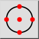

Referenca
Alatna traka / Ikona:


Izbornik: Hvatanje > Referenca
Prečac: S, R
Naredbe: snapreference | sr
Alatna traka / Ikona:


Hvata referentne točke. Referentne točke plave su točke koje se prikazuju kada je entitet odabran. To je osobito korisno za hvatanje referentnih točaka krugova i lukova, na primjer prilikom crtanja središnjih linija.